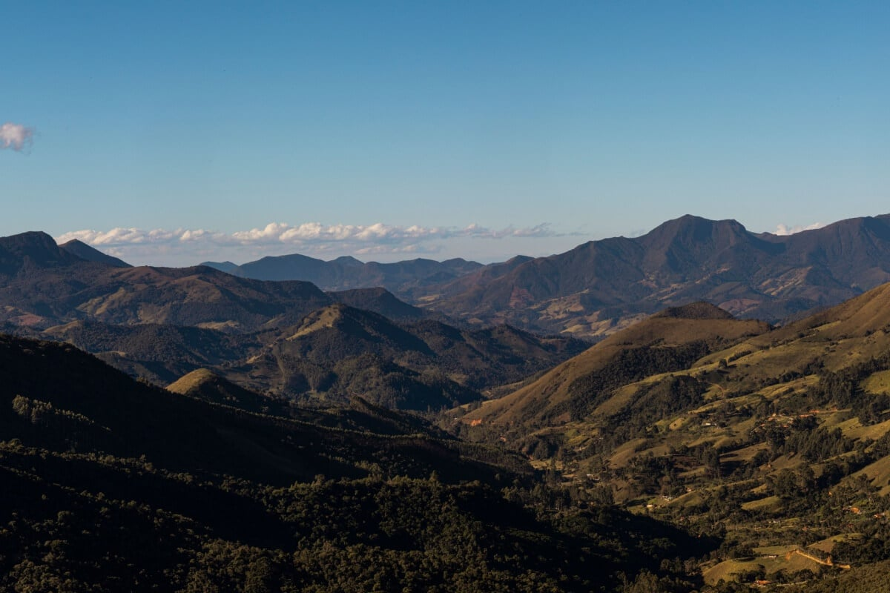
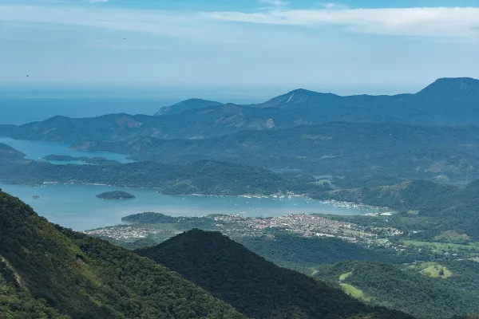
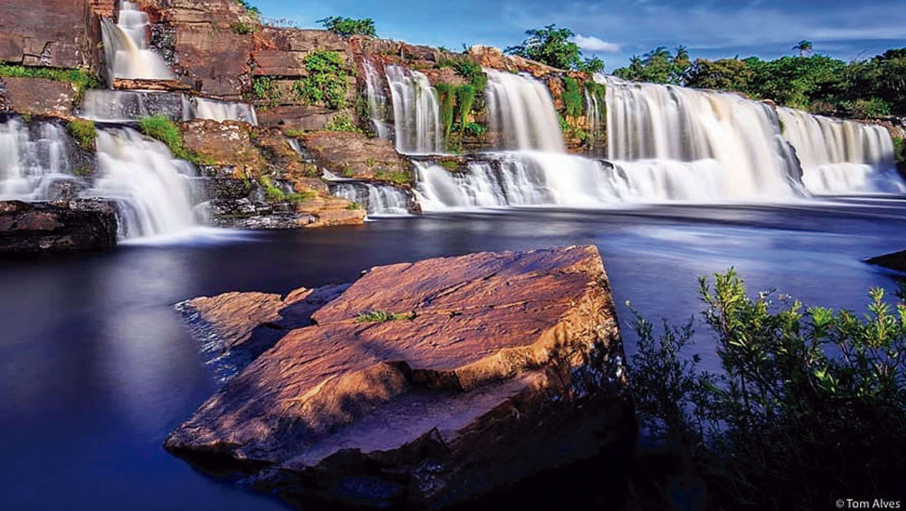
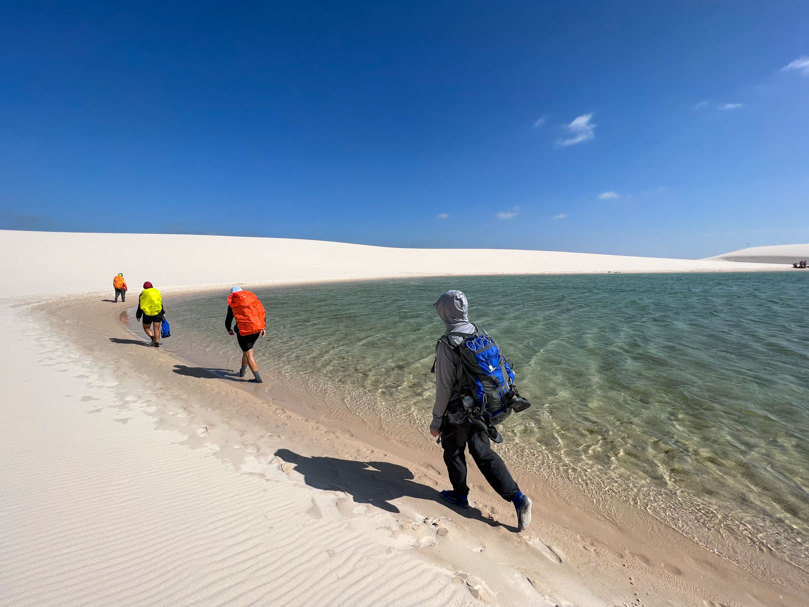
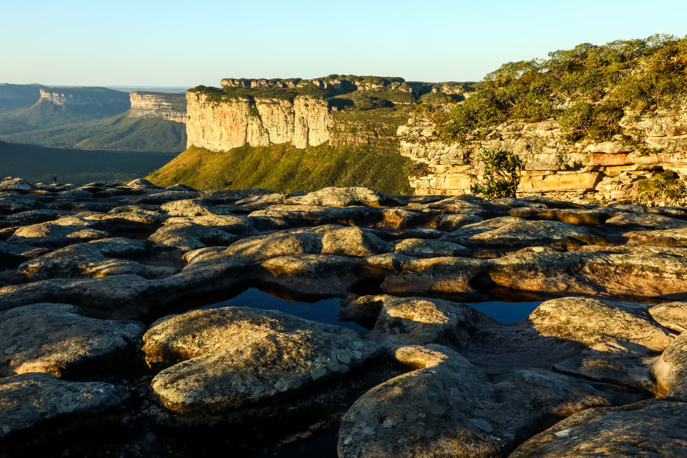

Explore as melhores trilhas do Brasil
Aventure-se pelas serras, cachoeiras e paisagens incríveis
Sobre o site
Nosso objetivo é conectar você com as melhores trilhas e serras do Brasil, oferecendo dicas e experiências incríveis para aventureiros.
🌄 Destinos em destaque

Serra da Mantiqueira
Uma das serras mais bonitas do Brasil, com trilhas e vistas incríveis.

Trilha do Pico da Bandeira
Uma das trilhas mais famosas para quem ama aventura!

Serra do Mar
Rica em biodiversidade e perfeita para ecoturismo

Serra do Cipó
Possui diversas cachoeiras e trilhas emocionantes!

Travessia Lençóis Maranhenses
Caminhadas intensas nas dunas com banhos em lagoas cristalinas e pernoite em redes em oásis

Chapada Diamantina
A região oferece desde trilhas leves até trekkings de vários dias (como o Vale do Pati).